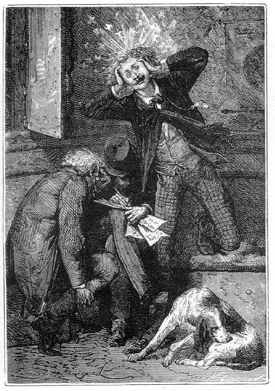

Capítol IV
UNA MICA
D'ÀLGEBRA
La nit va passar-se sense
cap incident. Tanmateix el mot "nit" és impropi.
La posició del projectil no canviava pas pel que es refereix al Sol.
Astronòmicament, era de dia a la part inferior del projectil, i de nit
a la part superior. Així, doncs, quan en Ia present narració aquests
dos mots són emprats, expressen el lapse de temps que transcorre entre
la sortida i la posta del Sol a la Terra.
La son dels viatgers fou tant més tranquil·la que, malgrat la
seva excessiva velocitat, el projectil semblava trobar-se absolutament immòbil.
Cap moviment no traïa la seva marxa a través de l'espai. El desplaçament,
per ràpid que sigui, no pot produir un efecte sensible sobre l'organisme
quan té lloc en el buit o quan la massa d'aire circula amb el cos arrossegat.
¿Quin habitant de la Terra s'adona de la seva velocitat que se l'enduu
a raó de més de cent sis mil quilòmetres per hora?1
El moviment, en aquestes condicions, no se "sent" pas més que
el repòs. Per tant, tot cos hi resta indiferent. Tot cos que es trobi
en repòs, hi romandrà així fins que una força exterior
el mourà. Però, si està en moviment, no s'aturarà
mentre algun obstacle no vingui a refrenar la seva marxa. Aquesta indiferència
al moviment o al repòs constitueix la inèrcia.
Barbicane i els seus companys, doncs, es podien creure en una immobilitat absoluta,
trobant-se com estaven tancats a l'interior del projectil. I l'efecte hauria
estat el mateix, d'altra banda, si s'haguessin trobat col·locats a l'exterior.
Si no hagués estat per la Lluna, que s'anava engrandint davant d'ells,
haurien jurat que flotaven en un estancament complet.
Aquell matí, el 3 de desembre, els viatgers foren desvetllats per una
remor joiosa però inesperada. Fou el cant d'un gall que ressonà
a l'interior del vagó.
Miquel Ardan, que fou el primer a desvetllar-se, s'enfilà fins al cim
del projectil i va tancar una caixa mig oberta:
-Vols callar? digué en veu baixa -. Aquest animal em desbaratarà
tots els plans!
Mentrestant, Nicholl i Barbicane s'havien desvetllat.
-Un gall? - havia dit Nicholl.
-No, amics meus - respongué Miquel vivament -, sóc jo, que us
he volgut desvetllar amb aquest cant camperol!
I dient això llançà un esplèndid cocorococ que hauria
fet honor al més orgullós del galls.
Els dos americans no pogueren menys de riure.
-Un bonic talent - digué Nicholl, mirant el seu company amb un aire sospitós.
-Sí - respongué Miquel -, és una broma de la meva terra.
És molt francès. Allí es fa el gall àdhuc en les
reunions més distingides!
Després, desviant la conversa:
-Saps, Barbicane - digué -, ¿en què he estat pensant tota
la nit?
-No - respongué el president.
-En els nostres amics de Cambridge. Tu ja deus haver remarcat que jo estic completament
ignorant en les coses de matemàtiques. M'és, doncs, impossible
d'endevinar com els savis de l'observatori han pogut calcular quina velocitat
inicial hauria de tenir el projectil en abandonar el Columbiad per arribar a
la Lluna.
-Tu vols dir - replicà Barbicane - per atènyer el punt neutral
on s'equilibren les atraccions terrestres i lunar, car és a partir d'aquell
punt situat aproximadament als nou dècims del trajecte quan el projectil
caurà sobre la Lluna en virtut, simplement, de la seva pesantor.
-Això mateix - respongué Miquel; però, una vegada més,
¿com l'han poguda calcular, la velocitat inicial?
-Res no era més fàcil - respongué Barbicane.
-I tu hauries sabut fer aquest càlcul? - preguntà Miquel Ardan.
-Perfectament. Nicholl i jo l'hauríem fet si la nota de l'observatori
no ens hagués estalviat aquest treball.
Doncs bé, estimat Barbicane - respongué Miquel -, abans m'haurien
tallat el cap, començant pels peus, que fer-me resoldre aquest problema!
-Perquè tu no saps àlgebra - respongué tranquil·lament
Barbicane.
-Ah!, ja us tinc a vosaltres, devoradors dx! Us creieu haver-ho dit tot quan
dieu: àlgebra.
-Miquel - replicà Barbicane -, ¿tu creus que es pugui arribar
a forjar sense el martell o a llaurar sense l'arada?
Difícilment.
-Doncs l'àlgebra és una eina, com l'arada o el martell, i una
bona eina per al qui la sap manejar.
-Parles seriosament?
-Molt seriosament.
-I podries manejar aquesta eina davant meu?
-Si això tant t'interessa.
-I ¿em podries mostrar com ha estat calculada la velocitat inicial del
nostre vagó?
-Sí, amic meu. I tenint en compte tots els elements del problema, la
distància del centre de la Terra al centre de la Lluna, el radi de la
Terra i la massa de la Lluna, jo puc demostrar exactament quina ha degut ésser
la velocitat inicial del projectil, i això per una simple fórmula.
-Veiam aquesta fórmula.
-Ja la veuràs. Solament que no et donaré la corba traçada
realment per la bala entre la Lluna i la Terra tenint en compte llur moviment
de translació al voltant del Sol, sinó que consideraré
aquests dos astres com immòbils, i ja n'hi haurà prou.
-I per què?
-Perquè seria cercar la solució d'aquest problema anomenat "el
problema dels tres cossos", i que el càlcul integral no pot resoldre
perquè encara no està prou avançat.
-Vaja - féu Miquel Ardan en el seu to de mofeta -. ¿així
les matemàtiques no han dit encara la seva darrera paraula?
-Certament que no - respongué Barbicane.
-Bo! Potser els selenites han anat més lluny que vosaltres amb el càlcul
integral! I, a propòsit, ¿què és el càlcul
integral?
-És un càlcul que és l'invers del càlcul diferencial
- respongué Barbicane seriosament.
-Molt agraït.
-En altres termes, és un càlcul pel qual se cerquen les quantitats
finites de les quals es coneix la diferencial.
-Almenys, ara sí que ho veig clar - respongué Miquel amb un aire
d'allò més satisfet.
-I ara - replicà Barbicane -, vinga un tros de paper i un bocí
de llapis i abans de mitja hora hauré trobat la fórmula demanada.
I Barbicane, un cop hagué dit això, s'absorbí en el seu
treball mentre Nicholl observava l'espai deixant al seu amic la cura de preparar
l'esmorzar.2
No havia passat mitja hora que Barbicane, aixecant el cap, mostrava a Miquel
Ardan un full de paper cobert de signes algebraics, enmig dels quals es destacava
aquesta fórmula general:
1 r m' r r
- ( v2 - vo2 ) = gr { - - 1 + - ( - - -) }
2 x m dx d-r
-I això què significa...? - preguntà Miquel.
-Això significa - respongué Nicholl - que una meitat de v elevada
al quadrat menys v subzero elevat al quadrat, és igual a gr multiplicat
per r partit per x menys 1, més m prima partida per m multiplicat per
r partit per d menys x, menys r partit per d menys r...
-X sobre y muntada sobre z i a cavall sobre p - exclamà Miquel Ardan
esclatant a riure -. ¿ tu comprens això, capità?
-No hi ha res més clar.
-Ja ho crec! - féu Miquel -. És una cosa que salta als ulls, i
ja en tinc prou.
-Etern burleta! - replicà Barbicane -. Has volgut àlgebra i en
tindràs fins al capdamunt!
-M'estimo més que em pengin!
-Certament - respongué Nïcholl, que examinava la fórmula
com a entès - això em sembla ben trobat, Barbicane. És
la integral de l'equació de les forces vives i no dubto gens que ella
ens donarà el resultat desitjat.
-Però jo voldria comprendre! - exclamava Miquel -. Donaria deu anys de
la vida de Nicholl per comprendre!
-Escolta, aleshores - reprengué Barbicane -. La meitat de y elevada al
quadrat menys v subzero elevada al quadrat, és la fórmula que
ens dóna la semivariació de la força viva.
-Bo, i Nicholl sap el que això significa?
-Evidentment, Miquel - respongué el capità -. Tots aquests signes
que et semblen cabalístics formen tanmateix el llenguatge més
clar, el més net i el més lògic per al qui sap llegir-los.
-¿I tu pretens, Nicholl - preguntà Miquel -, que, mitjançant
aquests jeroglífics, més incomprensibles que els ibis egipcis,
podràs trobar quina velocitat inicial calia donar al projectil?
-Indubtablement - respongué Nicholl -, i àdhuc per aquesta fórmula
jo et podré dir quina és la seva velocitat en un punt qualsevol
del seu recorregut.
-Paraula?
-Paraula.
-Llavors ets tan llest com el nostre president?
-No, Miquel. La cosa difícil és la que ha fet Barbicane. Plantejar
una equació que uneixi totes les condicions del problema. El restant
no és més que una qüestió d'aritmètica, i no
exigeix altra cosa que conèixer les quatre regles.
-Ja és bonic! - respongué Miquel Ardan, que, dit sigui de passada,
mai no havia pogut fer una suma exacta i que definia així aquesta regla:
"Petit trenca closques xinès que permet d'obtenir totals indefinidament
variats".
Per la seva part, Barbicane assegurava que Nicholl, si hi hagués pensat,
hauria obtingut també aquella fórmula.
-No ho sé - deia Nicholl -, car com més l'estudio més meravellosament
la trobo plantejada.
-Ara, escolta - digué Barbicane al seu ignorant company -, i veuràs
com totes aquestes lletres tenen una significació.
-Ja escolto - digué Miquel amb aire resignat.
-d - féu Barbicane - és la distància del centre de la Terra
al centre de la Lluna, car són els centres el que convé prendre
per a calcular les atraccions. -Això, ja ho comprenc.
-r és el radi de la Terra.
-r, radi. D'acord.
-m és la massa de la Terra; m prima la massa de la Lluna. Perquè,
en efecte, convé tenir en compte la massa dels dos cossos que s'atreuen,
ja que l'atracció es proporcional a les masses.
-Això està entès.
-g representa la gravetat, la velocitat adquirida al cap d'un segon per un cos
que cau a la superfície de la Terra. Ho veus clar?
-Tan clar com l'aigua! - replicà Miquel.
-Ara, represento per x la distància variable que separa el projectil
del centre de la Terra, i per v la velocitat que té aquest projectil
a aquella distància. -Bé.
-Per últim, l'expressió v zero que figura en l'equació
és la velocitat que posseeix la bala en sortir de l'atmosfera.
-Efectivament - digué Nicholl -, és en aquest punt que convé
calcular aquesta velocitat, perquè ja sabem que la velocitat al moment
de la sortida val exactament les tres meitats de la velocitat en sortir de l'atmosfera.
-Ja no ho entenc! - féu Miquel.
-Doncs és ben senzill - digué Barbicane.
-No pas per mi - replicà Miquel.
-Això vol dir que quan el nostre projectil haurà arribat al límit
de l'atmosfera terrestre haurà perdut un terç de la seva velocitat
inicial.
-Tant?
-Sí, amic meu, i només pel seu fregadís sobre les capes
atmosfèriques. Comprendràs molt bé que com més ràpidament
marxi més resistència trobarà per part de l'aire.
-Això, ja ho admeto -respongué Miquel -, i ho comprenc, per bé
que les teves v zero dos i les teves v zero elevades al quadrat em ballin pel
cap com claus dins un sac!
-Primer efecte de l'àlgebra - reprengué Barbicane -. I ara, per
acabar, anem a plantejar la referència numèrica d'aquestes diverses
expressions, o sigui numerar el seu valor.
-Gràcies a Déu! - respongué Miquel.
-D'aquestes expressions - digué Barbicane -, les unes ens són
conegudes i les altres s'han de calcular.
-Jo 'm'encarrego d'aquestes últimes - digué Nicholl.
-Vegem r - continuà dient Barbicane -. r és el radi de la Terra
que, en la latitud de la Florida, el nostre punt de sortida, és igual
a 6.370.000 metres. d, o sigui la distància del centre de la Terra al
centre de la Lluna, val cinquanta-sis radis terrestres, o sia...
Nicholl multiplicà ràpidament.
-O sigui - digué aquest - 356.720.000 metres, al moment de trobar-se
la Lluna en el seu perigeu, això és, a la distància més
curta de la Terra.3
-Bé - féu Barbicane -. Ara, m prima sobre m, o sigui la referència
de la massa de la Lluna amb la de la Terra, és igual a un vuitanta-unè.
-Perfectament - digué Miquel.
-g la gravetat, és a la Florida de nou metres vuitanta-un. D'ací
resulta que gr és igual...
-A seixanta-dos milions quatre-cents vint-i-sis mil metres quadrats -respongué
Nicholl.
-I ara? - preguntà Miquel Ardan.
-Ara que les expressions estan numerades - respongué Barbicane -, vaig
a cercar la velocitat v zero, és a dir, la velocitat que deu tenir el
projectil en deixar l'atmosfera per a atènyer el punt d'atracció
igual amb una velocitat nuesa. I, ja que en aquest moment la velocitat serà
nul·la, jo dic que ella igualarà zero, i que x, o sigui la distància
on es troba aquest punt neutral, estarà representat pels nou dècims
de d, o sigui la distància que separa els dos centres.
-Tinc una idea vaga que això deu ésser així - respongué
Miquel.
-Llavors, tindrem doncs: x igual a nou dècims de d, i v igual a zero,
i la fórmula serà...
Barbicane escriví ràpidament damunt el paper:
10 r 1 10 r r
v o2 = 2 gr { 1 - - - - ( - - - ) }
9 d 81 d d - r
Nicholl llegí amb avidesa
-És això! És això! - exclamà.
-És clar - preguntà Barbicane.
-Està escrit en lletres de foc! - respongué Nicholl.
-Pobres homes! - murmurà Miquel.
-Ho has comprès, per fi? - preguntà Barbicane.
-Que si ho he comprès! - exclamà Miquel Ardan -. El que em passa
és que el meu cap rebenta!
-Així tenim - reprengué Barbicane - que v subzero dos és
igual a dos gr multiplicat per un, menys 10 r partit per 9 d, menys un vuitanta-unè
multiplicat per 10 r partit per d menys r partit per d menys r

El meu cap rebenta
.
-I ara - digué Nicholl -, per a obtenir la velocitat de la bala en sortir
de l'atmosfera no hi ha més que calcular.
El capità, acostumat a tota mena de dificultats, es posà a fer
números amb una rapidesa meravellosa. Les divisions i les multiplicacions
s'allargaven dessota els seus dits. Les xifres plovien damunt la blancor del
paper. Barbicane el seguia amb la mirada, mentre que Miquel Ardan s'oprimia
les temples amb les dues mans per dominar-se el mal de cap.
-I què? - preguntà Barbicane després d'uns minuts de silenci.
-Fet el càlcul - respongué Nicholl -, resulta que v zero, és
a dir, la velocitat del projectil en sortir de l'atmosfera per assolir el punt
d'igual atracció, ha hagut d'ésser de...
-De quant...? - féu Barbicane.
-D'onze mil cinquanta-un metres en el primer segon.
-Ei! - féu Barbicane fent un salt -, què heu dit?
-Onze mil cinquanta-un metres.
-Maledicció! - cridà el president amb un gest de desesperació.
-Què tens? - preguntà Miquel Ardan, molt sorprès.
-Què tinc? - preguntà -. Que, si en aquell moment la velocitat
havia disminuït d'una tercera part pel fregadís, la velocitat inicial
havia d'ésser...
-De setze mil cinc-cents setanta-sis metres! - respongué Nicholl.
-I l'observatori de Cambridge ha declarat que onze mil metres serien suficients
per a sortir, i el nostre projectil ha partit només que amb aquesta velocitat!
-I què? - preguntà Nicholl.
-Caram! que serà insuficient!
- Bo.
-I que no assolirem el punt neutral!
-Déu del cel!
-Ni arribarem tampoc a la meitat del camí!
-En nom d'una bala! - exclamà Miquel Ardan, saltant com si el projectil
estigués a punt de topar amb l'esferoide terrestre.
-I caurem sobre la Terra!
1. 106.560 quilòmetres per hora. La Terra camina
a raó de 29,6 quilòmetres per segon.
2. Els càlculs de les velocitats i distàncies
relacionades amb el projectil, les quals dades han anat apareixent en el transcurs
d'aquesta obra, es deuen al professor de matemàtiques del Lycée
Henry IV, senyor Enric Garcet, cosí de segon grau de Juli Verne.
Segons conten els biògrafs del novel·lista, la resolució
d'aquestes equacions tingué lloc dins la flairosa atmosfera d'un cafè
parisenc i embolcallats pel fum de les pipes (N. del T.)
3. Aquesta distància perigenca és la que hauria
hagut d'ésser considerada com a base per a recórrer el projectil
del Gun-Club i dependre d'ella tots els altres càlculs, deduint-hi però,
abans, el valor d'un radi terrestre, que són 6.370 quilòmetres
(més exactament, 6.366), pel fet que en passar la Lluna pel zenit escurçaria
encara el recorregut (com es llegeix en el capítol IV del primer llibre
d'aquesta novel·la, pàgina 31), i no en 345.640 quilòmetres,
longitud perigenca massa exagerada quant a la reducció i la qual cosa
pot explicar-nos certes inexactituds que en el transcurs de l'obra es troben.
(N. del T.)